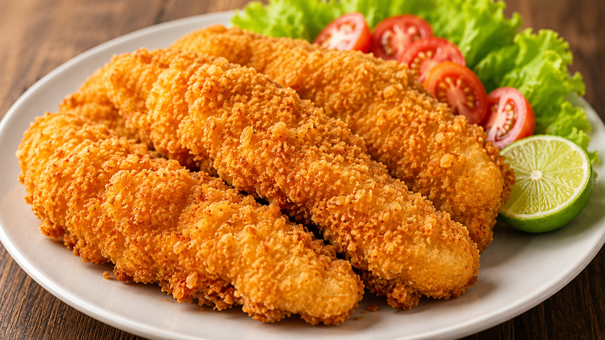

Original Crispy

⏱️ 20 menit👨🍳 Mudah🍴 2–3 porsi
Lele Fillet Crispy Original
Cocok untuk menu dasar yang gurih, renyah, dan mudah dikembangkan menjadi berbagai topping atau saus.
Bahan
- 250–300 g lele fillet kemasan
- 1 sdt bawang putih bubuk
- 1/2 sdt merica
- 1/2 sdt garam
- 75 g tepung serbaguna
- 50 ml air es
- Minyak untuk menggoreng
Cara Memasak
- Baluri fillet dengan garam, merica, dan bawang putih bubuk selama 10 menit.
- Campur tepung dengan air es hingga membentuk adonan pelapis.
- Celupkan fillet ke adonan lalu goreng sampai kuning keemasan.
- Tiriskan dan sajikan dengan sambal atau mayones lemon.